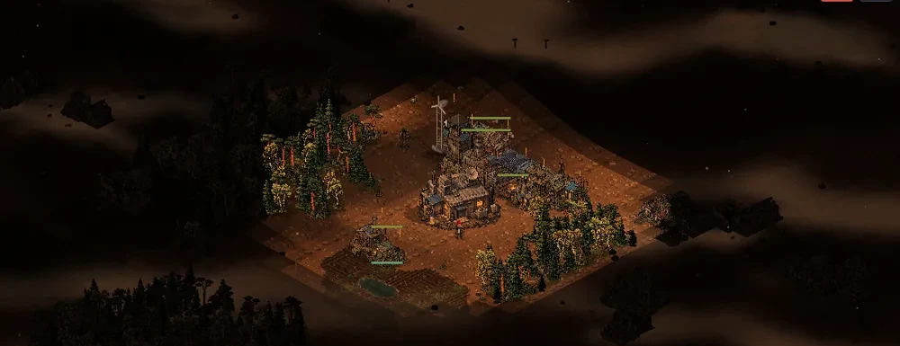

Support
Askfält är under aktiv utveckling. Här hittar du svar på vanliga frågor och hur du rapporterar fel.
Rapportera ett fel
Skapa ett ärende på GitHub. Beskriv vad som hände, hur felet kan återskapas och vilken enhet, webbläsare och spelversion du använder.
Öppna GitHub IssuesSäkerhetsproblem
Har du hittat en sårbarhet? Rapportera den privat via e-post, inte i ett öppet ärende.
security@askfalt.seInnan du skapar ett ärende
- Sök bland befintliga ärenden så att felet inte redan är rapporterat.
- Bifoga gärna en skärmbild och stegen som leder fram till felet.
- GitHub-ärenden är offentliga. Lägg inte in personuppgifter, sparfiler, lösenord eller nycklar.
Ansvarsfull rapportering av sårbarheter
Skicka säkerhetsrelaterade rapporter till security@askfalt.se. Beskriv problemet, hur det kan återskapas och vilken version som påverkas. Publicera inte detaljerna förrän problemet har åtgärdats. Kontaktuppgifterna finns även i security.txt.
Vanliga frågor
Var sparas mina spel?
Webbversionen sparar spel och inställningar lokalt i den webbläsare där du spelar. Om du rensar webbläsarens webbplatsdata kan sparade spel försvinna. Lagringen i den kommande iOS-appen testas separat.
Kan jag spela offline?
Ja. PWA-versionen är byggd för att fungera offline när resurserna har hämtats en gång.
Hur installerar jag spelet som app?
Öppna webbversionen och välj ”Lägg till på hemskärmen” (Safari) eller ”Installera app” (Chrome och Edge).
Finns multiplayer?
Inte ännu. Multiplayer är planerat till en senare version.
När kommer iPhone-appen?
Målet är den 1 november 2026, med reservation för testning och Apples granskning. En App Store-länk visas här först när appen är publicerad.